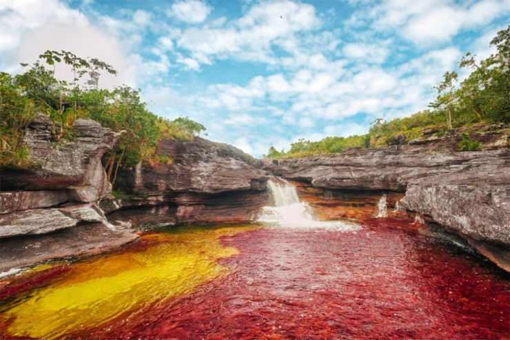
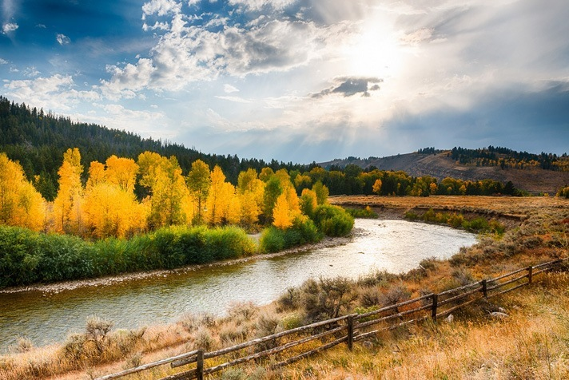

:تعريف الانهار
لنهر هو مجرى مائي طبيعي واسع له ضفتين، تجري فيه المياه الناتجة عن مياه الأمطار، والمياه النابعة من الأرض، ومياه العيون الأرضيّة، ومياه المسطحات المائيّة، ويمتدّ بين المصبّ والمنبع، ويمرّ تطوّر النهر في ثلاث مراحل هي: مرحلة الشباب، ومرحلة النضج، ومرحلة الشيخوخة.
:أهمية الأنهار
قيام الحضارات حولها، حيث قامت أعظم الحضارات حول الأنهار، كالحضارة المصريّة الفرعونيّة، والحضارة الصينيّة القديمة. استعمال مياهها في الزراعة، والشرب، وري المزروعات، والصناعة، والأعمال المنزليّة. توليد طاقة الكهرباء. بيئة طبيعيّة لحياة العديد من الكائنات الحيّة، كالحيوانات، والنباتات. تخزين المياه في السدود لاستخدامها وقت الحاجة لها. تعدّ وسيلةً من وسائل الحركة، والنقل من منطقة إلى أخرى. استخدامها في الملاحة البحريّة. تعتبر المناطق المحيط بالأنهار من أفضل الأراضي للزراعة.
:ثلاثة عمليات رئيسية للأنهار
- النحت، والتعرية، من خلال عمليّة الإذابة للصخور وحتّها.
- الترسيب، أي ترسيب المواد المحمولة على جوانب النهر.
- النقل إذ يقوم النهر بنقل الرواسب من مكانها إلى مكانٍ آخر كالمواد المذابة، والحجارة، والحصى، والجلاميد.
:أشهر الانهار في العالم
- نهر النيل: أطول أنهار العالم.
- نهر المسسپي: أطول نهر في أمريكا.
- نهر الدانوب: أطول نهر في أوروبا طوله 2860 كم.
- نهر الأمازون: أعرض نهر في العالم وأحد أكثر أنهار العالم غزارة.
- نهر دجلة ونهر الفرات: نهرا بلاد الرافدين العراق
- نهر اليانجستي: أطول نهر في آسيا.
- نهر السند: في باكستان.
:نهر الغانج
يعتبر من أكبر أنهار شبه القارة الهندية، وهو من الأنهار المقدسة عند الهندوس، وأسباب قدسيته هي: خواص مياهه الطبيعية، ولأنه نهر أسطوري، وسمي الغانج نسبة إلى الإله غانغا، وتبلغ مساحته 907.000 كيلومتر مربع، وطوله 2.510 كيلومتراً، وينبع النهر من جبال الهملايا من الشمال، حيث يبدأ مجراه من جبال الهملايا، ويصب في خليج البنغال في الجنوب.
: نهر النيل
يقع في الجهة الشمالية الشرقية من قارة أفريقيا، ويعدّ أطول الأنهار في العالم؛ حيث يبلغ طوله 6650 كيلومتراً، وينبع من بحيرة فيكتوريا جنوباً، ويصبّ في البحر الأبيض المتوسط شمالاً، ويغديه نهرين رئيسين هما: نهر النيل الأبيض، ونهر النيل الأزرق، ويقطع مسار النهر في عشرة دول هي: أوغندا، وأثيوبيا، ومصر، والسودان والكونغو الديمقراطيّة، ورواندا، وتنزانيا، وكينيا، وبوروندي، وأرتيريا بصفة مراقب.
:أنهار أخرى
نهر المسسبي في قارة أمريكا الشمالية، والنهر الأصفر في الصين، ونهر السند في الهند وباكستان، ونهر الأمازون في قارة أمريكا الجنوبيّة، ونهر الدانوب في قارة أوروبا، ونهر اليانجستي في قارة آسيا، ونهر دجلة في العراق.